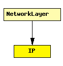

File: Network/IPv4/IP.ned
C++ definition: click here
Implements the IP protocol. The protocol header is represented by the IPDatagram message class.
Interfacing with higher layer protocols
To send a packet over IP from a higher layer protocol, the module should fill in an IPControlInfo object, attach it to the packet with cMessage's setControlInfo() method, the send it to the IP module.
When IP sends up a packet to a higher layer protocol, it will also attach an IPControlInfo to the packet, with the source and destination IP address, etc. of the IP datagram in which the packet arrived.
IP can serve several higher-layer protocols. When delivering packets to them, the output gate is determined from the Protocol field in the IP header. The protocol-to-gateindex mapping must be given in the protocolMapping string parameter, in the following format:
protocolnumber:gateindex, protocolnumber:gateindex, ...
The recommended setting is:
That is, protocolMapping="6:0,17:1,1:2,2:3,46:4"
Routing and interfacing with lower layers
The routing table is stored in the module RoutingTable. When a datagram needs to be routed, IP queries RoutingTable for the output interface (or "port") and next hop address of the packet. This is done by directly calling C++ methods (such as findBestMatchingRoute(destAddress)) of RoutingTable. No message exchange with RoutingTable takes place.
A routed datagram will be sent to the queueOut gate, with an IPRoutingDecision control info object attached which contains next hop address and interface number. queueOut is expected to be connected to ARP.
Routing protocol implementations (e.g. OSPF and ISIS) can also query and manipulate the route table by calling RoutingTable's methods in C++.
Performance model, QoS
In the current form, IP contains a FIFO which queues up IP datagrams; datagrams are processed in order. The processing time is determined by the procDelay module parameter.
The current performance model comes from the QueueBase C++ base class. If you need a more sophisticated performance model, you may change the module implementation (the IP class), and: (1) override the startService() method which determines processing time for a packet, or (2) use a different base class.
See also: RoutingTable, IPControlInfo, IPRoutingDecision, ARP
Author: Andras Varga
The following diagram shows usage relationships between modules, networks and channels. Unresolved module (and channel) types are missing from the diagram. Click here to see the full picture.
If a module type shows up more than once, that means it has been defined in more than one NED file.
| NetworkLayer | Network layer of an IP node. |
| Name | Type | Description |
|---|---|---|
| procDelay | numeric const | |
| timeToLive | numeric const | |
| multicastTimeToLive | numeric const | |
| protocolMapping | string | |
| fragmentTimeout | numeric const |
| Name | Direction | Description |
|---|---|---|
| transportIn [ ] | input | |
| transportOut [ ] | output | |
| queueIn [ ] | input | |
| queueOut | output |
simple IP parameters: procDelay : numeric const, timeToLive : numeric const, multicastTimeToLive : numeric const, protocolMapping : string, fragmentTimeout : numeric const; gates: in: transportIn[]; out: transportOut[]; in: queueIn[]; out: queueOut; endsimple